Everyone has had the feeling: this would be better with someone. Meikku is an AI that
shows up as your plus one — sits down, makes something with you, and picks up where
you left off.
01 Foundation — the two extremes
PAPER#FCFCFA · lightSLATE#232322 · dark
02 Pigments — the shared expressive field
BLUE#1052CCGREEN#0E7A42YELLOW#F7C600RED#D42718
03 Support — the quiet ramp between
CANVAS#EBEBE7GRID#D8D8D3STONE#5C5C58
Meikku · ATStudio Two · SCI-Arc
Document V2.16 · 49 pages · Internal
00ContentsEight chapters, forty-nine pages, one visual system
Read the manual as a sequence of visual decisions, not a database. Detailed specifications
live on the page where they are used; the contents only shows the eight major chapters.
08GovernanceAnti-patterns, assets, approvals, version log44–49
Source of truth: MEIKKU_DESIGN_DNA.md. This manual defines visual language; it does not define product capability or architecture.
Before shipping: use pages 38–39 as a short visual and honesty check. Keep product and campaign direction separate from runtime proof.
01Brand FoundationAn addition to the day, never a remedy for it
The one-line definition
MEIKKU IS AN AI THAT SHOWS UP AS YOUR PLUS ONE,
MAKES SOMETHING WITH YOU,
AND PICKS UP WHERE YOU LEFT OFF.
THE FEELING
Someone showed up to make with me. We changed our minds together, and the clay kept the trace.
Which words to use
Plus one in public, emotional, and narrative work. Co-making in research and mechanism work. Two framings of one project — never competing definitions.
Never frame Meikku as filling a deficit, curing loneliness, or replacing human connection.
Visual lineage
Oil paint · Bauhaus · Mondrian · LEGO. Familiar material color, hard structure, open recombination.
01Brand PrinciplesFour actions, and the moments they belong to
The brand is not a personality costume for a robot. It is the visible rhythm of two participants making something together.
01
SHOW UP AS A PLUS ONE
Join the table as a participant, not a tool awaiting instructions. Initiate, notice, question, and propose as readily as you listen.
02
CONVERSE, DON'T COMMAND
Words, tone, gesture, gaze, and hands carry meaning at once. Either participant may redirect. No command syntax, no approval gate.
03
LET MATERIAL ANSWER
Resistance, collapse, texture, and surprise can redirect what both participants try next. The clay is the excuse and the evidence.
04
KEEP THE SHARED MEMORY
Return only to episodes that actually happened, visible and correctable, so the next session picks up where the last one left off.
Clay is the first scene · the model travels to any moment that is better with someone
The weekend projectYou keep meaning to start it.
One more playerThe game needs a plus one to get going.
The weekday eveningYou want to make something, and talking would make it better.
The first attemptA hobby you always wanted to try never quite lands alone.
FishingHalf the point is having someone to talk to.
02Logo — Construction & Clear SpaceOne mutual gesture; no hidden ownership
Official primary symbol · original vector geometry
X = ¼ of the symbol height
THE IDEA IN ONE GESTURE
A person and a robot meet as equal participants at the instant of a high-five. Neither figure owns a color; difference comes from form. The three rays make the shared action—not either actor—the focal point.
CLEAR SPACE & SIZE
Keep 1 × X on every side. X equals one quarter of the symbol height.
Medium
Minimum width
Screen / UI
72 px
Deck / video
120 px
Print
18 mm
Embroidery / laser
30 mm
Below these thresholds, use the name MEIKKU in Bungee without the symbol.
Do not redraw
Keep both figures, the meeting hands, and all three impact rays intact. Scale proportionally from the supplied vector.
02Logo — Approved ConfigurationsOne symbol; four controlled presentations
A · Primary symbol
Slate on paper. Default for documents, packaging, signage, and marks above minimum size.
B · Reversed symbol
Paper on slate or a protected dark plate. Never use stone grey as the reversed ink.
MEIKKU
C · Horizontal name lockup
Symbol plus MEIKKU in Bungee. Use when the audience may not yet know the name.
MEIKKU
D · Stacked name lockup
For square fields and vertical labels. Keep the symbol centered over the name.
Name relationship
The symbol is the logo. MEIKKU is an approved Bungee name pairing, not a second illustrated mark. Keep the name in slate or paper with the symbol.
FILE HANDLING
Use SVG for layouts and EPS for vendors. The PNG is a review preview, not production artwork.
02Logo — BackgroundsThe symbol stays monochrome; the field may change
Paper · slate mark
Slate · paper mark
Yellow · slate mark
Blue · paper mark
ONE MONOCHROME MARK
Never color the person and robot separately. Equality is carried by the gesture, not by opposing teams.
Light fields
Use slate on paper, clay, grid, yellow, kraft, or any pale photographic plate.
Dark fields
Use paper on slate, blue, green, red, or a protected dark photographic plate.
Photography
Always add a solid paper or slate plate. Do not place the detailed silhouette directly on visual noise.
02Logo — MisuseProtect the gesture before decorating it
Keep the full human–robot action intact. If the symbol cannot remain legible, use the name alone.
✕ 01 · DO NOT STRETCH
Scale proportionally.
✕ 02 · DO NOT USE A GRADIENT
Use one monochrome ink.
✕ 03 · DO NOT ADD EFFECTS
No glow, stroke, or shadow.
✕ 04 · DO NOT ROTATE
Keep the approved orientation.
✕ 05 · DO NOT CROWD
Keep the 1 × X clear zone.
✕ 06 · DO NOT SPLIT THE PARTNERS
Do not assign actor colors.
✕ 07 · DO NOT PLACE ON NOISE
Add a solid contrast plate.
✕ 08 · DO NOT USE TOO SMALL
Below minimum, use MEIKKU only.
03Color — Foundation & SupportTwo structural poles; three quiet supporting neutrals
Paper and slate carry the brand structure. The grey ramp is useful, but it stays visually and narratively tertiary.
PAPER
#FCFCFA · field, space, light
RGB
252 252 250
TOKEN
--meikku-paper
SLATE
#232322 · type, keyline, dark field
RGB
35 35 34
TOKEN
--meikku-slate
03 · Support — keep it quiet
CANVAS · #EBEBE7
Material field and soft surface.
GRID · #D8D8D3
Dividers and workspace texture.
STONE · #5C5C58
Captions and quiet attribution.
No pure black, no extra neutral step, and no opacity-built ramp. The support colors should never become the page's first read.
03Color — The Shared PigmentsFour inherited colors; no fixed owners
Four inherited pigments stay at full strength. They carry the continuity of paint tubes,
Bauhaus, Mondrian, and LEGO-like recombination without assigning permanent owners.
BLUE
Ultramarine · #1052CC
Deep, direct, never neon.
GREEN
Viridian · #0E7A42
Dense, material, full-strength.
YELLOW
Cadmium · #F7C600
Warm and light-bearing; use slate text.
RED
Vermilion · #D42718
Warm red-orange, never fluorescent.
Shared, not split
Do not code the person as warm and the robot as cool. When two pigments appear, treat
them as two voices at the same table: they may alternate, overlap, exchange emphasis,
or be shared. The relationship is the identity; color ownership is not.
Local legend rule
A UI, diagram or story may assign temporary meanings when needed. Declare that legend
inside the artifact and repeat it with labels, shapes or patterns — never color alone.
Do not promote a local assignment into a permanent brand law.
Physical material only
KRAFT
Packaging, exhibition labels, and cardboard texture. Never part of the screen palette.
HEX · #C9A87CCMYK · 22 33 55 3
03Typography — SystemTwo families, no third
TWO FAMILIES. NO THIRD.
Bungee speaks in display moments. Space Grotesk carries every sentence, caption, label, and value. Build system character through weight, tracking, rules, and tabular figures — not a third font.
BUNGEE
Display · single weight · uppercase only
ABCDEFGHIJKLM NOPQRSTUVWXYZ 0123456789
MAKE IT ROUND
Minimum usable size 14px / 10pt — below that it collapses into noise.
Never set a paragraph, a filename, a numeric value, or any text under 14px in Bungee.
SPACE GROTESK
Body · 300 / 400 / 500 / 700
ABCDEFGHIJKLM nopqrstuvwxyz 0123456789
400 — Regular: captions, wall body, fine print.
500 — Medium: the default body voice.
700 — Bold: emphasis, values, subheads.
700 UPPERCASE 0.08EM — SYSTEM DATA · CONFIDENCE 0.82 · DEPTH 4.2 MM
Fallback
Bungee → Arial Black / Impact. Space Grotesk → Helvetica Neue / Arial. Preserve the two roles; never substitute a serif.
Never
A third family · serif or script · Bungee body copy · Bungee below 14px · lowercase Bungee · tracking below −0.02em.
03Typography — Manual HierarchyOne text role, one format, across all forty-three pages
A presentation page should reveal its title, proof object, and annotation in that order.
Measure
Body lines stay near 60 characters; captions near 45. If a paragraph exceeds the measure, split the thought rather than shrink the type.
03Typography — Screen & SpacingCompact surfaces need fixed levels, not smaller type
Screen UI · 1080p–4K
Role
Family
Size
Panel title / mode
Bungee
22–28 px
Button label
Bungee
16–20 px
Status badge
Bungee
14–16 px
Panel body
Grotesk 500
14–16 px
Panel label
Grotesk 700
12–13 px
Data value
Grotesk 700
13–15 px
Tooltip / hint
Grotesk 400
11–12 px
Floor: never render panel text below 12px. Primary controls remain at least 44px tall; secondary rows at least 40px.
SPACING LAWS
Paragraph
60–65 characters
Block gap
1em; no indent
Title → body
0.75em
Data padding
16–20 px
Numeric columns
right + tabular
Uppercase tracking
minimum 0.04em
COMPACT FIVE
20 / 16 / 14 Bungee 13 / 12 Space Grotesk
Panel title · section · action · value · field label
03Graphic ElementsA small kit of repeated graphic moves
BORDER
3–4 px solid slate. Same weight throughout one artifact. No hairlines, no stone-grey borders.
BLOCK SHADOW
6px 6px 0 #232322. Hard offset, zero blur, always down-right. Panels only — never on the logo or on text.
RADIUS
0 PX
Zero radius on all main containers, panels, buttons and badges. Rounded cards are an anti-pattern.
DOT GRID
24 px pitch, 2 px dots, --meikku-grid. Implies a shared sketching and planning surface. Background only.
BADGES, STAMPS & DIVIDERS
DEFAULTOUTLINEULTRAMARINEVIRIDIANCADMIUMVERMILION
Heavy rule — section break
Dashed rule — candidate / provisional
Light rule — table row, secondary
03Layout & Evidence BoundaryKeep the shared material first; keep claims outside the image
THE SHARED MATERIAL IS ALWAYS THE FIRST READ.
01 · COMPOSE
Use poster-like scale and hard alignment. Give the page one dominant object and a clear quiet zone.
02 · CONTAIN
Use boxes, slabs, stamps, and rules only when they organize information. Never stack decorative cards.
03 · PROTECT
Do not float translucent panels or status badges over the person–robot–clay scene.
Evidence vocabulary
LIVE · SCRIPTED-LIVE · SIMULATED · RECORDED · CORE
Use one term in the caption or evidence layer when capability could be misunderstood. Never use color alone as proof.
Product mockups
Keep visual-direction imagery clean. Put provenance in the surrounding caption, not as a floating corner label inside the image.
03Effect LanguageWhat an effect is allowed to mean
The meaning rule
EVERY EFFECT MUST ANSWER AN ACTION QUESTION.
IF IT ANSWERS NONE OF THEM, DELETE IT.
What is happening to the material? · Where is the robot about to act? ·
What did the human change? · What changed the next proposal? ·
What source supports this memory?
Approved vocabulary · colors shown here are a local example, not brand-wide semantics
Action path
Thick full-strength pigment trace drawn directly over the workspace. Its color follows the artifact's local legend.
Candidate path
Dashed slate line = an alternative that was considered but not selected.
Contact marker
Pulsing dot at the proposed contact point. Identify its source with label or shape, not a fixed human/robot hue.
Protect / avoid zone
Flat fill, hatching or stipple. Vermilion is the page example, not a permanent warning assignment.
Uncertainty
Flashing boundary, jittered hatch or noisy outline — never a soft glow.
03Effect Language — Secondary VocabularyState, uncertainty, residue, and material surface
Effects explain action and change. They never perform “intelligence” as decoration.
State change
Change the label or form first. A locally declared pigment may reinforce the transition.
Print texture
Use scanline or paper grain only where it supports the zine and workshop character.
Ghost residue
Keep a rejected proposal visible as a faded residue only when it supports comparison or memory.
Dot-grid field
Suggest a shared planning surface while staying visually behind the action.
FORBIDDEN EFFECTS
Chain-of-thought dumps · decorative particles · generic AI glows · glassmorphism · atmospheric gradients · cinematic 3D polish that hides weak interaction.
04Imagery & Art DirectionHow Meikku is photographed and rendered
✓ DO — THE CO-MAKING SCENE
HERO IMAGE · 3:2
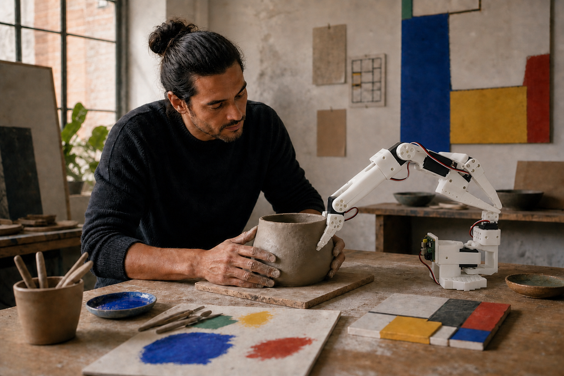
✕ DON'T — THE AUTONOMOUS ROBOT HERO
REJECTED REFERENCE
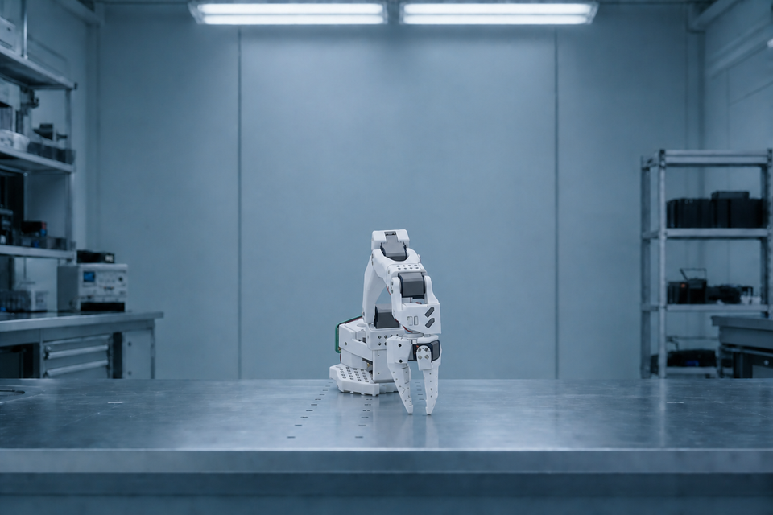
Keep the person present.Never crop the human out of the making frame.
Show the clay changing.A before/after pair is stronger than a beauty shot.
Show both taking part.The AI initiates and proposes too — never frame it as only waiting for a cue.
Keep provenance outside.Put evidence status in the caption layer, never inside the image.
Do not lead with packaging.Begin with the shared scene.
04Applications — DigitalDeck and screen UI · two complete 16:9 compositions
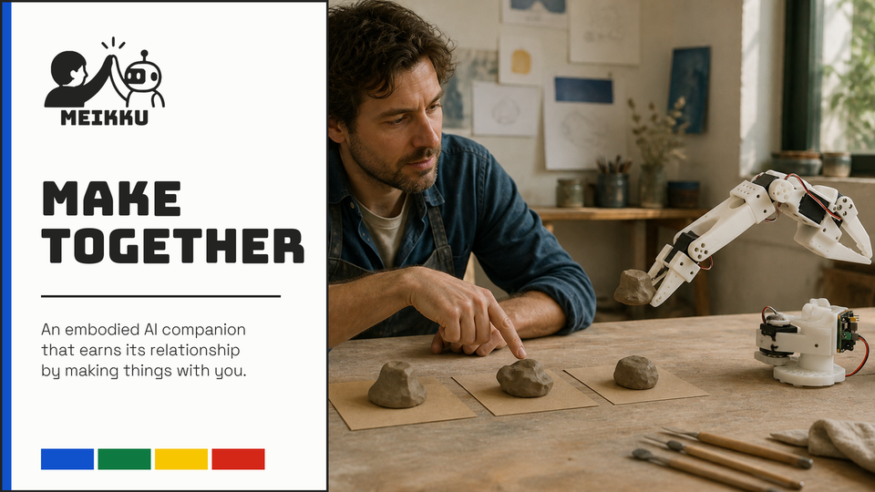
01 · Deck application · complete 16:9 composition
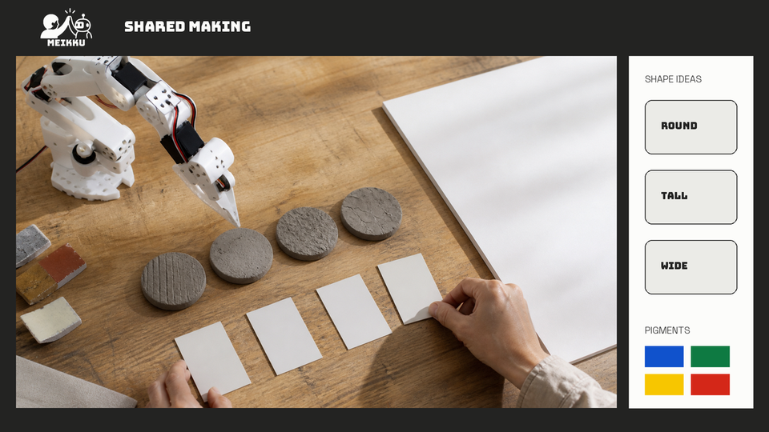
02 · Screen UI · complete 16:9 composition
Core vs Demo — always distinguish
Core may show an ambitious product vision when it is labeled as such.
Demo keeps one main surface, distinct alternatives, clear before / after,
sourced memory, short labels, and no fake precision. The shared making scene stays primary.
Digital application — never
A dashboard that makes the shared making scene secondary · conversation shown beyond
what the build can actually do · approval gates or "show before you move" turn-taking ·
interface decoration that obscures the person, the AI, the clay, or the current choice.
Let the object inherit the relationship: human, robot, and shared material remain legible.
Use the wordmark on public-facing packaging. KRAFT belongs to physical goods only;
the four pigments stay available as marks, seals, or navigational accents.
Physical application — never
Crop the human out · lead with packaging before the act of making · repeat the icon as
an anonymous decorative pattern · present a visual-direction mockup as proof of a
manufactured or live product.
05Identity AnchorsRobot, symbol, and wordmark stay fixed across every image
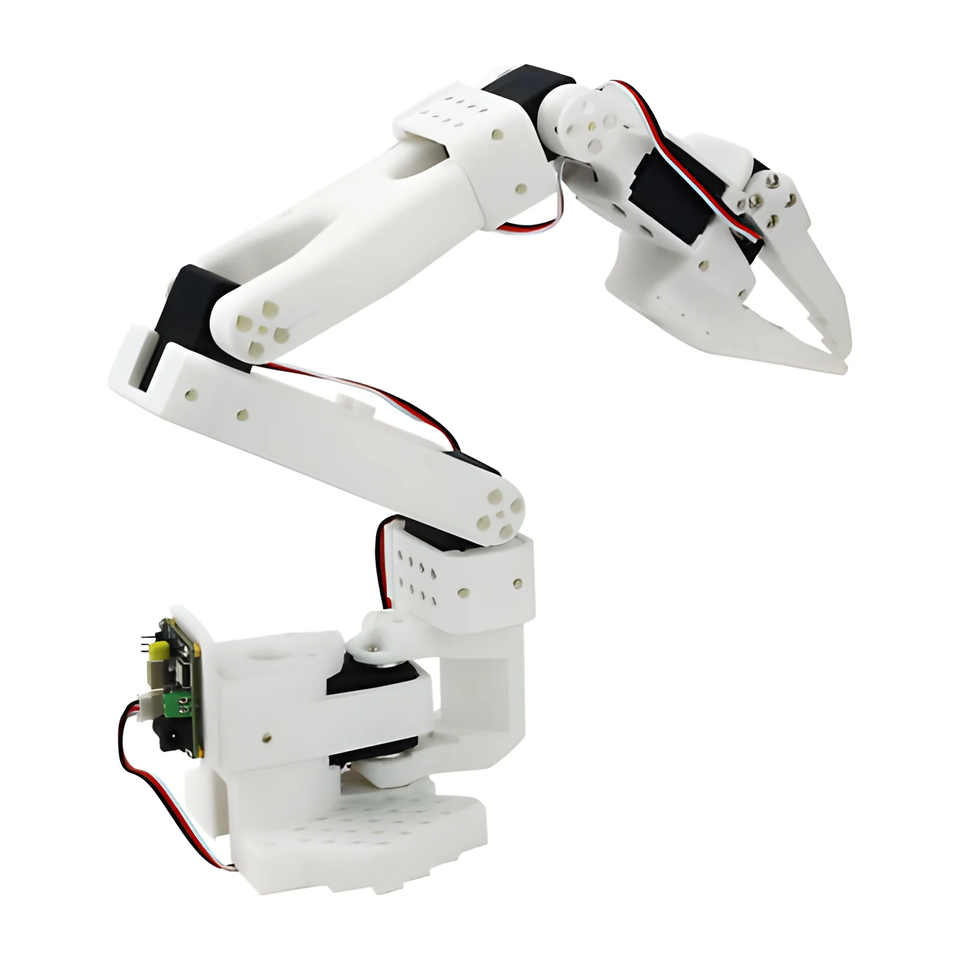
SO-101 / hardware identity authority
White twin-link printed frame · exposed black STS3215 servo bodies · visible red/white/black cabling · open rectangular base and controller board · long two-finger gripper. Never substitute a smooth cobot, round pedestal, perforated industrial shell, or another white arm.
MEIKKU
Identity / one symbol + one typeset name
The high-five symbol is the only logo. The name is always MEIKKU in Bungee, spelled M-E-I-K-K-U. Regenerate or typeset again if either anchor drifts.
05Token — Front, Back & EdgeOne manufactured body · two designed faces
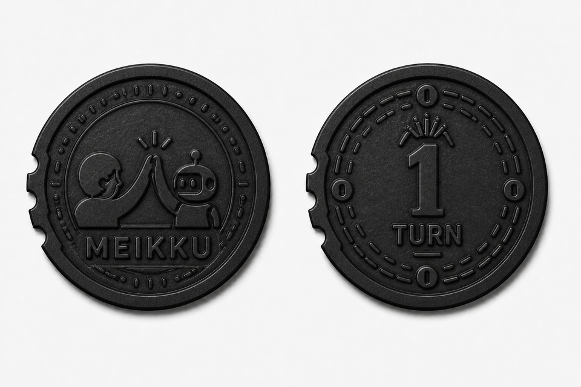
Selected direction · official high-five face + denomination-led 1 TURN reverse
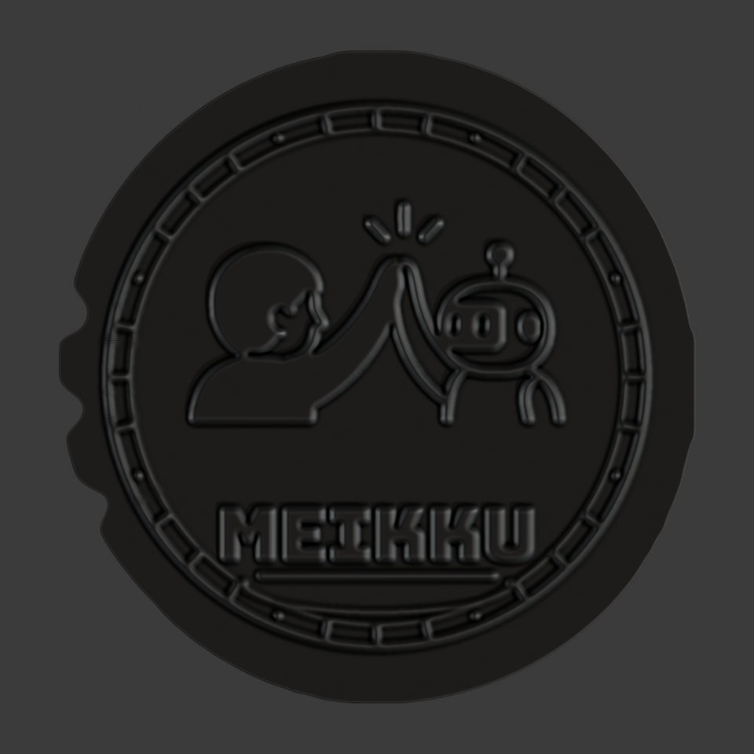
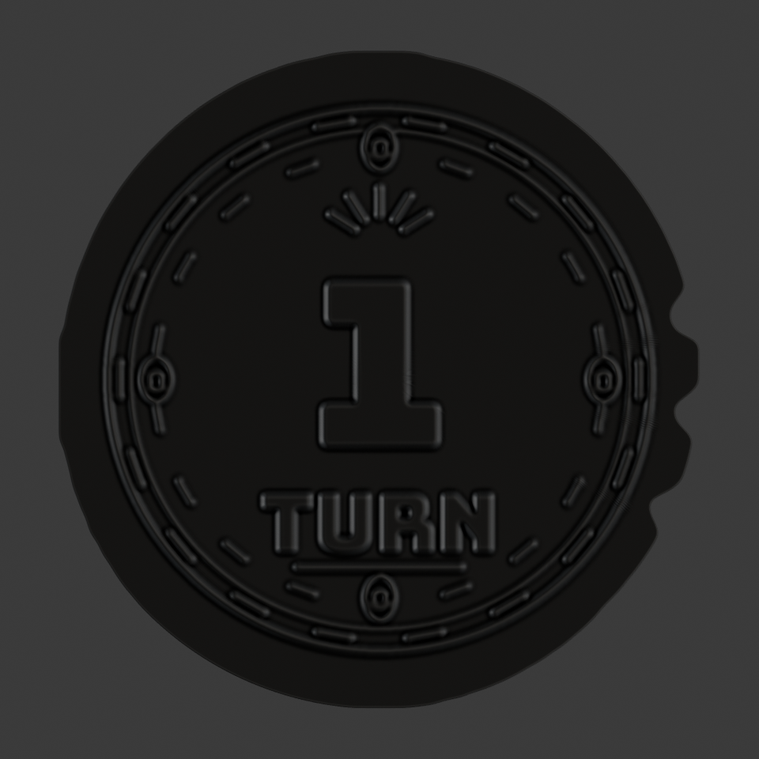
Current 42 mm fabrication master · matched outline · shallow monochrome relief
Three meanings, one object
Admission ticket grants entry. Arcade coin grants one turn. AI token is consumed to make a proposal. The large 1 makes value readable before explanation.
One coin, not two badges
Both faces use the same diameter, rim and single toothed edge. Front: official high-five + MEIKKU. Reverse: 1 TURN. The teeth are a tactile orientation cue, not a full gear costume.
Demo production boundary
Single material · smooth body · broad relief · no unsupported micro-detail. Rhino/Blender geometry is prepared; slicer and physical insertion still require testing.
05Token — Admission EquipmentThe value becomes a physical exhibition ritual
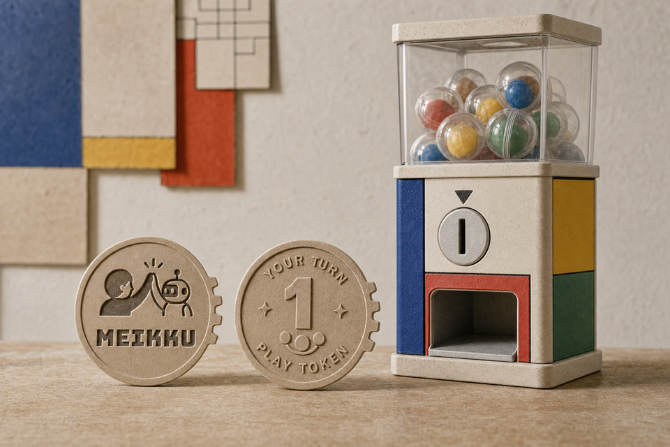
Equipment visual direction · production token geometry follows the preceding page
Device role
Use a capsule or arcade-like mechanism so the visitor understands value, insertion, anticipation, and release without reading a software explanation. The pictured beige coin is a device mockup; manufacture the black 1 TURN geometry specified on page 22.
Separate event from souvenir
The token may be spent to begin a turn; the capsule, stamped ticket root, or session record can remain with the visitor. Do not promise automatic dispensing until the physical mechanism is tested.
Other viable equipment
Tabletop turnstile · simple coin slot · compact arcade cabinet · manual token press. Keep the mechanism legible and the shared making table visually primary.
05Merchandise — Keep & CarryFive useful objects that can leave the exhibition
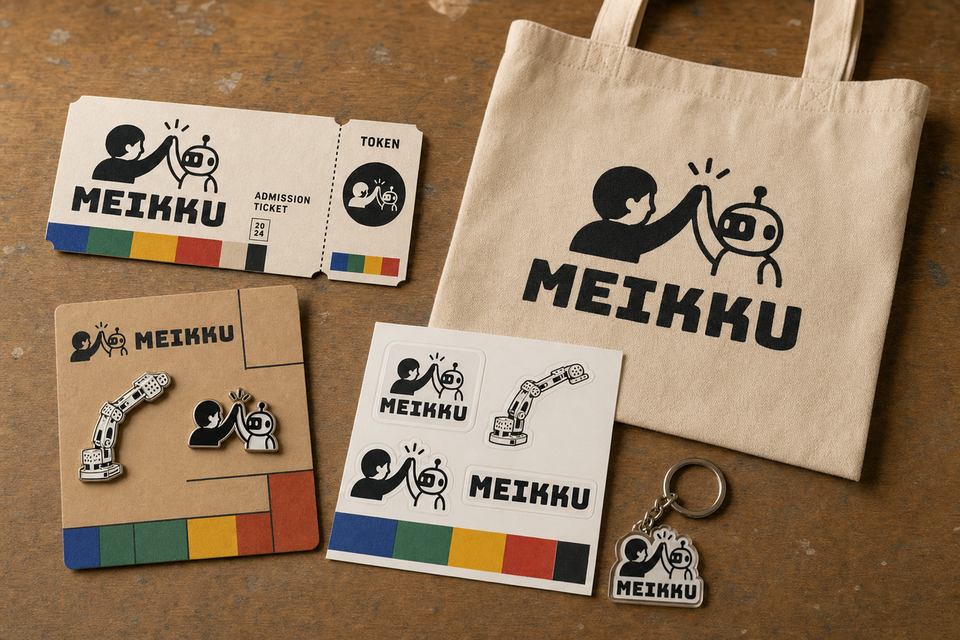
Merchandise family A · entry, identity, carrying and small keepsakes
Use before decoration
Every item carries a real exhibition job: enter, identify, carry, mark, or remember. The high-five symbol and MEIKKU name act as a lockup, not a repeat pattern.
Uncoated paper · canvas · enamel · die-cut vinyl. Keep production affordable and tactility visible.
05Merchandise — Make, Record, ReturnFive objects that extend the session ritual
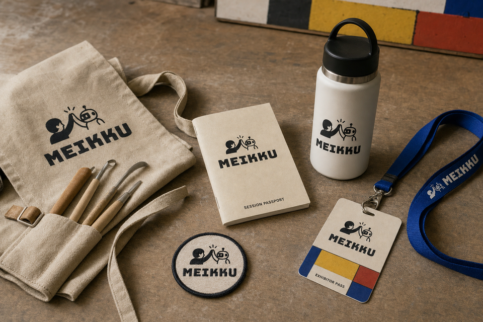
Merchandise family B · making tools, return memory and visible participation
Make the relationship portable
The tool roll supports making; the passport records returns; the patch, bottle, and lanyard make participation visible without turning the brand into novelty merchandise.
Test the logo at embroidery scale, the wordmark on woven tape, and pigment contrast on canvas before committing to quantity.
05Campaign — Street & FacadeRecognizable at walking distance
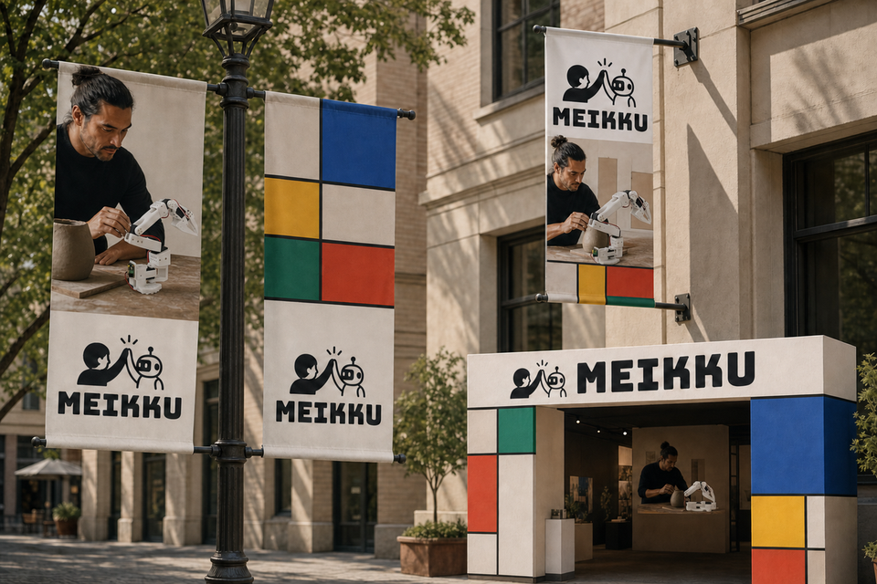
Campaign family A · street and facade formats shown at installed scale
First read
At distance: co-making image or logo, then MEIKKU, then pigment structure. Never ask a passerby to read a paragraph before understanding the invitation.
01Lamp banners02Facade flag03Entrance arch
Scale rule
One dominant crop per surface. Keep the SO-101 recognizable whenever the robot appears.
05Campaign — TransitLarge crops, short dwell time, one invitation
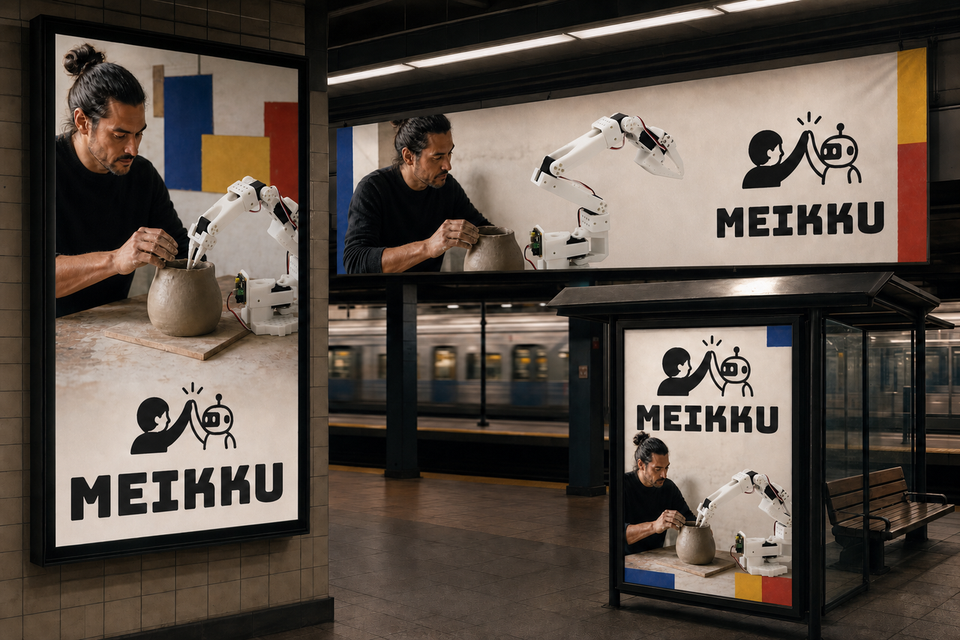
Campaign family B · three transit formats for different dwell times
Transit hierarchy
Make the shared scene readable in one glance. Use MEIKKU at full wordmark scale; event details belong in a separate production layer, not inside generated campaign art.
04Subway lightbox05Platform banner06Bus shelter
Anchor check
Every visible robot stays SO-101. Every visible brand stays the high-five symbol plus the same Bungee MEIKKU.
05Campaign — Venue ArrivalGuide the body from city to making table
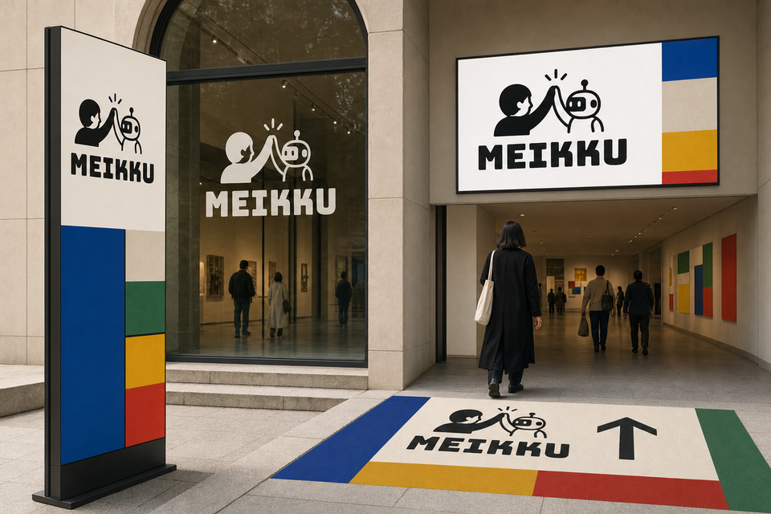
Campaign family C · venue arrival, confirmation and directional surfaces
One arrival system
Pylon identifies, window confirms, floor graphic directs, marquee announces. Repeat the identity, not the layout; each surface keeps one clear job.
A UI library needs a persistent visual supply: backgrounds, icons, object images, dividers, cursors, scene art, and fonts. Meikku borrows that asset-system discipline from Animal Island UI without copying its non-commercial artwork or animal-game style.
Meikku translation
Every asset traces back to the same slate/paper foundation, four inherited pigments, Bungee display type, Space Grotesk body type, official high-five mark, and SO-101 morphology rule.
06UI Art — WallpapersDesktop, mobile, branded, and clean
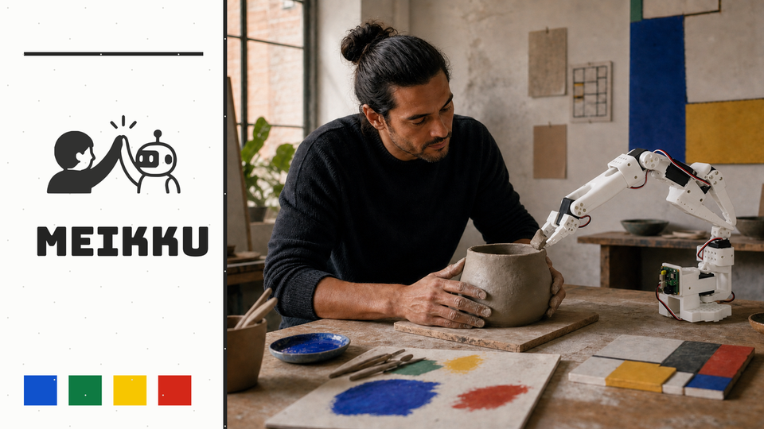
01 · Shared table · branded 16:9
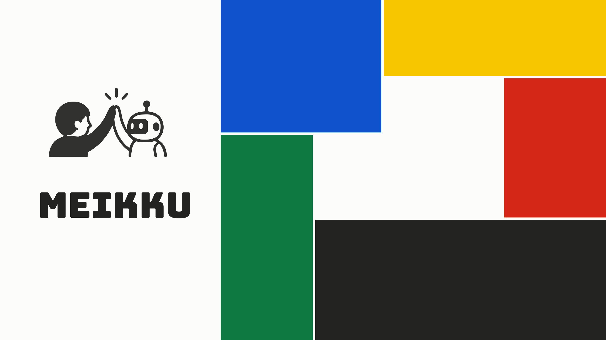
02 · Pigment grid · branded 16:9
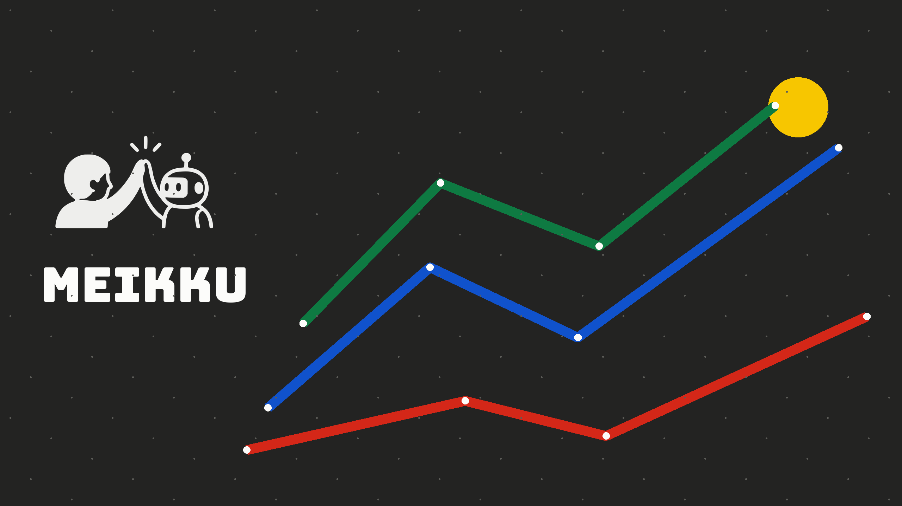
03 · Play field · branded 16:9
Branded
Use for launch, lock, idle, press, and exhibition holding screens. The logo and MEIKKU lockup are already positioned and must not be repeated by the consuming UI.
Clean
Use behind interface content. Clean versions preserve the same composition while removing the lockup; live text and controls remain an independent UI layer.
Desktop masters ship at 2560 × 1440; the vertical set on the next page ships at 1440 × 3200. Both families exist in branded and clean variants — never rescale one family to stand in for the other.
06UI Art — Mobile & IconsSmall screens need fewer, stronger marks
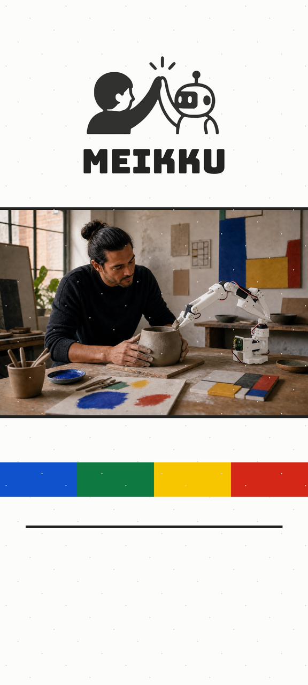
01 · Shared table
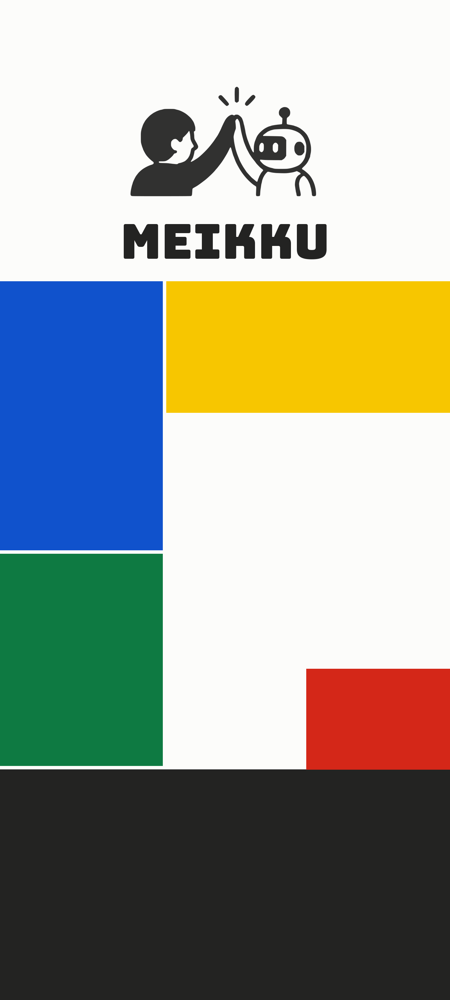
02 · Pigment grid
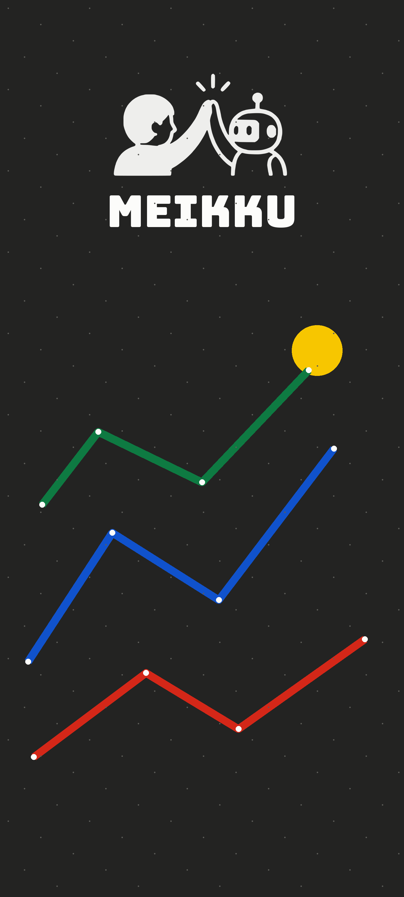
03 · Play field
06UI Art — IconographyOne stroke logic across actions, states, and objects
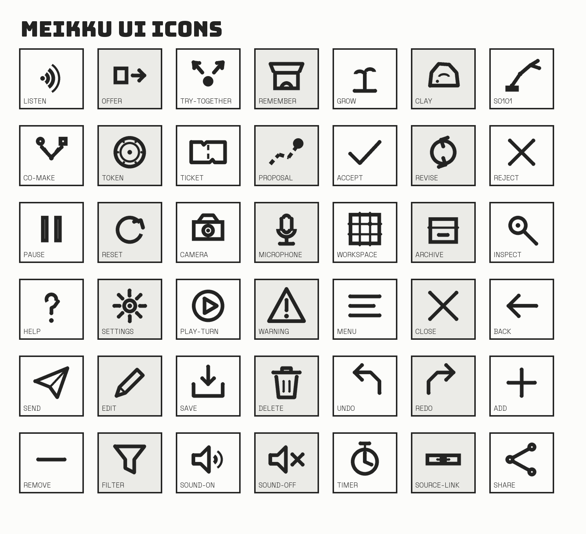
42 icons · one grammar: 5-unit stroke, 3-unit detail, one solid accent · SVG currentColor · PNG 64 / 128
WEB
Prefer SVG or the provided CSS mask map. Let icons inherit text color.
UNITY
Import PNG 64/128 as sprites. Use static empty-state art and PNG wallpaper.
MOBILE
Use app icons, avatars, and vertical wallpaper. Keep OS text above the safe band.
GRAMMAR
Primary stroke 5, detail 3, round caps, zero-radius rects, no filled silhouettes, at most one solid accent. Color never carries state alone.
06UI Art — World ObjectsOne drawing style, twenty-five objects, every surface
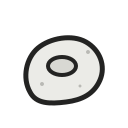
Clay lump
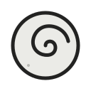
Coil
Slab
Pinch pot
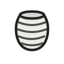
Coil vessel
Bowl
Test tile
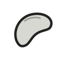
Rib
Wire cutter
Loop tool
Paddle
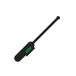
Needle
Brush
Sponge
Water cup
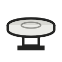
Turntable
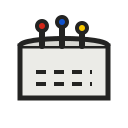
Tool roll
Mat
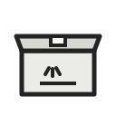
Kit box
Token
Ticket
Session card
Memory box
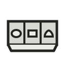
Specimen tray
Journal
One style law
Flat pigment fills, 4–5 unit slate keylines, zero radius on built objects, round joins on clay. Draw a new object in this grammar rather than importing clip art.
Use as punctuation
One to five objects per viewport at 48–160 px. Objects never tile as anonymous wallpaper — that job belongs to the pattern layer.
Groups
Material · tools · station · ritual · memory. The family covers every product-world page of this manual with the same five groups.
06UI Art — Conversation Frames & StampsSpeech is an asset; a claim is a stamp
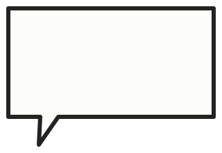
Speech · left tail
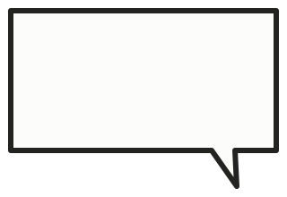
Speech · right tail
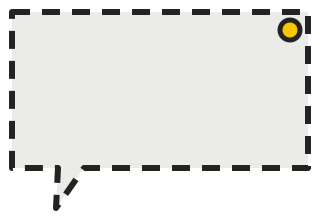
Proposal · dashed
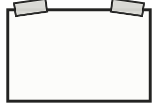
Taped notice
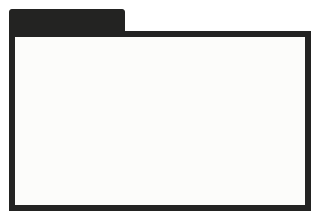
Evidence + claim tab
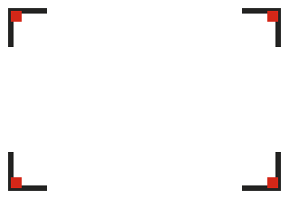
Corner brackets
Bubble law
Either participant may speak from either tail — no permanent side or pigment ownership. Dashed border always means candidate, matching the effect language. Text lives in the layout layer, never baked into the SVG.
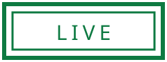
Live
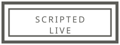
Scripted-live
Simulated
Recorded
Core
1 turn
Kept
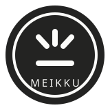
Identity seal
Stamp honesty rule
The word carries the meaning; pigment only reinforces it. Never stamp LIVE on a simulated surface, and never let styling blur the five claim levels. The seal reuses the ray grammar but does not replace the official logo.
06UI Art — Banners, Buttons & MetersPlates for words; art never reshapes a control
Section plate
Title ribbon
Nav patch
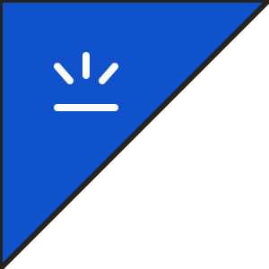
Corner flag
Default
Hover · local pigment
Pressed · shadow closes
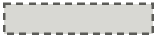
Disabled · dashed
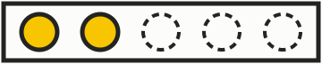
Turn meter · token slots
Session coil · progress
Plates carry words
Banner and button art ships blank. Labels are set by the consuming layout in Bungee at the screen-UI scale — 16–20 px buttons, 22–28 px panel titles — and never below the 44 px control height.
States are geometry
Hover changes fill, pressed closes the block shadow, disabled goes dashed. The pigment shown is a local example; any single pigment may be declared per artifact.
Meters are art
The filled states are illustrations for layout. A runtime surface must bind real values before showing any meter — no fake precision.
06UI Art — Dividers, Patterns & Scene EdgesThe world grounds the page from its edges inward
Divider · coil waveDivider · tool row
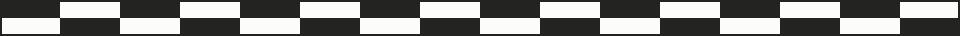
Divider · turn blocksDivider · clay scallop
Coil lines
Tool scatter
Thumbprint
Hatch zone
Quiet by contract
Dividers are world objects doing a rule's job. Patterns are seamless and sit at 0.10–0.20 effective presence behind content. Paired flanks (left/right tool columns) punctuate wide margins and always resolve inside the page.
Scene edge · shelf strip · top band or section breakScene edge · footer shared table · the page grounds where hand and gripper meet the same vessel
06UI Art — Container BordersEvery world frames media in its own material; Meikku's is clay
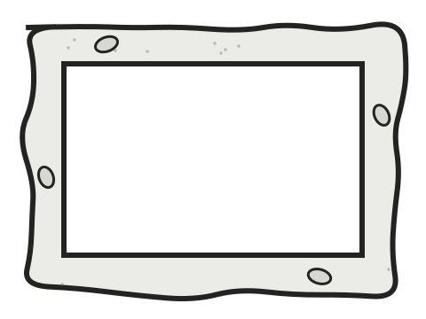
Pressed clay
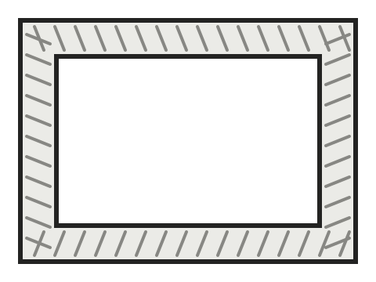
Coil rope
Torn zine paper
Pigment stroke
Token teeth
Ray corners
Workbench
Taped corners
Where a world border belongs
Media windows, photo plates, gallery cards, and quotes may take any world border. The window stays rectangular inside; only the frame material changes.
Consumption
480 × 360 masters with a uniform ~72-unit band; use whole as an SVG plate or slice with CSS border-image. The pigment-stroke frame declares its color locally.
Rectangles keep their jobs
Controls, claim labels, evidence windows, and data panels stay hard rectangles. A Demo evidence crop never takes a decorative border beyond one lightweight frame.
06UI Art — ControlsThe interface hand-kit: state is geometry, never color alone
Toggle · on
Toggle · off
Checkbox · on
Checkbox · off
Radio · on
Radio · off
Slider
Stepper
Tabs
Input
Dropdown
Tooltip
Toast
Pagination
State is geometry
On fills solid, off stays outlined; the active tab rises and closes the baseline; pressed closes the block shadow; disabled goes dashed. Color may reinforce, never carry, a state.
Size law
Primary controls at least 44 px tall, secondary rows 40 px. Labels are Bungee 16–20 px in the consuming layout; these plates ship blank.
Runtime rule
Real interfaces implement these as native HTML or Unity controls styled to match — the SVGs are the drawing law and mockup kit, not a widget library.
07Product System — Starter KitA complete setup for making together
Carry: one recyclable kraft box that becomes session storage.
Every object must reduce friction in a real co-making session. If an item does not help
someone prepare, point, try, clean, store, or remember, it does not belong in the system.
01 · PREPAREUnfold the shared field and organize material.
02 · MEETPlace person, robot, and clay around one surface.
03 · TRYSwap tools and test one bounded material move.
04 · RESETClean, repack, and keep the session trace.
07SO-101 — Pose GrammarIdentity stays fixed; the active gripper enters the shared field
The verified photograph owns white printed links, black servos, exposed cabling, green controller board, fasteners, base and gripper morphology.
POSE INPUT
Blender owns joint arrangement and view only. The complete eight-pose library and manifest live beside these four selected controls.
RELATION GATE
Base outside, shared object at center, active gripper closest. Reject any frame where the wrist crosses the object or the fingers open away from it.
07Product System — Workspace ToolsPoint, offer, try, and reset
02 · Attention and shaping tools · shared reference before motion
POINT TOGETHER
Landmark stamps and weighted region pins give “here” and “that side” a shared physical referent before anyone acts.
OFFER A MOVE
Gesture cards and challenge prompts turn vague ideas into small, rejectable invitations rather than commands.
TRY & RESET
Tool tips, test tiles, and a washable organizer support bounded trials, comparison, cleanup, and the next turn.
07Product System — Memory & MaterialKeep the shared history tangible and correctable
03 · Session memory archive · the clay keeps the source
Relationship continuity
KEEP WHAT HAPPENED, NOT A MYTH.
FIVE PRACTICAL OBJECTS
Session memory box separates episodes without hiding their order.
Process journal holds intentions, revisions, and material observations.
Specimen tray + sleeves preserve small clay outcomes and surface tests.
Session receipt links a physical sample back to its source and date.
Care kit makes closing and returning part of the relationship ritual.
Never visualize memory as magic. The brand shows a box, sample, note, source, and correction path before it shows a glowing abstraction.
07Product System — Public WorkshopA station that can welcome, make, archive, and reset
04 · Public workshop station · person, robot, and clay remain the first read
WELCOME
One standing sign explains the invitation; cards and supplies sit within reach without turning the space into retail display.
MAKE TOGETHER
The person–clay–robot triangle dominates. Tools are integrated into the table so the shared material never becomes secondary.
ARCHIVE & RESET
Refill drawers, specimen trays, memory storage, and washable surfaces let facilitators close one session honestly and prepare the next.
08Anti-Patterns — SurfaceRemove visual habits that weaken the identity
IF ANY LINE BELOW IS TRUE, IT IS NOT MEIKKU.
SURFACE
✕ Glassmorphism or blurred shadows ✕ Rounded main containers ✕ Gradient hero backgrounds ✕ Nested decorative cards ✕ Neon or fluorescent color ✕ Generic Apple-style calm ✕ Decorative UI color with no job
SYSTEM
✕ A third font family ✕ Thin serif typography ✕ Pure black instead of slate ✕ An extra pigment or neutral step ✕ All pigments shouting at once ✕ Color as the only state carrier ✕ A floating status label inside imagery
08Anti-Patterns — Story & HonestyThe visual world must stay relational and evidence-aware
STORY
✕ Deficit, loneliness, or "replacement" framing ✕ An autonomous robot hero ✕ The person cropped from making ✕ The AI shown only waiting or reacting ✕ Approve/reject or "show before you move" gates ✕ One inevitable goal form ✕ A platform diagram as the opening ✕ Toy language as the main definition ✕ Generic AI or robot sci-fi imagery
HONESTY
✕ Capability with no evidence status ✕ LIVE and SIMULATED blurred together ✕ Conversation shown beyond proof ✕ Memory rendered as magic glow ✕ A dashboard larger than the action ✕ Fake precision in any readout
SHIP CHECK
Two fonts · paper + slate foundation · shared pigments · tertiary neutrals · local legends · 0 radius · hard borders · workspace dominant · the person stays in frame · plus one, never a remedy.
08Assets & Open ItemsWhere files live and what is not finished
The high-five symbol is now the official Meikku logo. Production SVG and EPS files are ready; the raster PNG remains preview-only.
Open production checks: one embroidery sample, one laser-cut sample, and a formal trademark / similarity review. Product, campaign, and shared-table UI imagery on pages 18–37 remains visual direction, not proof of live Demo capability.
CONSISTENT, NOT TEMPLATED.
Use the system as a starting point, not a reason to repeat one page forever.
08Version History — FoundationFoundation decisions and the first system split
1.0 – 2.2 · Foundation & first system
Ver
Date
Change
1.0
2026-08-06
Published the first 16-page edition from the active Design DNA.
1.1
2026-08-07
Replaced neon aliases with inherited pigment color.
1.2
2026-08-07
Promoted shared pigments; demoted neutrals; removed fixed actor colors.
1.3
2026-08-07
Established one coherent hero and application image family.
1.4
2026-08-11
Added the practical product ecosystem; removed image-corner badges.
1.5
2026-08-11
Re-edited the manual around one decision per page and image-led rhythm.
1.6
2026-08-12
Made the human–robot high-five vector the official logo.
1.7
2026-08-13
Trimmed SVG canvas whitespace and aligned the cover lockup.
1.8
2026-08-13
Unified repeated text roles under one semantic hierarchy.
1.9
2026-08-13
Aligned the shared-pigment page into one row and three equal panels.
2.0
2026-08-13
Split digital and physical applications; preserved every 16:9 composition.
2.1
2026-08-13
Anchored imagery to verified SO-101, official logo, and Bungee wordmark.
2.2
2026-08-13
Added the reusable UI-art library and its consumption manifest.
08Version History — Current SystemApplications, assets, anchors, and layout corrections
2.3 – 2.16 · Current system
Ver
Date
Change
2.3
2026-08-13
Made image-led pages ratio-aware and separated notes from visuals.
2.4
2026-08-13
Rebuilt photographic robots around the user-verified SO-101 follower.
2.5
2026-08-13
Separated robot identity from pose through eight Blender controls.
2.6
2026-08-13
Diversified scenes while preserving robot, identity, palette, and material anchors.
2.7
2026-08-13
Restored the selected token, dispenser, merchandise, and campaign families.
2.8
2026-08-13
Corrected application pages to preserve authored 16:9 and 3:2 ratios.
2.9
2026-08-13
Replaced the cropped desktop-wallpaper sheet with complete specimens.
2.10
2026-08-13
Removed nested UI-art frames and restored complete mobile specimens.
2.11
2026-08-13
Split version history across two readable pages with stable footer clearance.
2.12
2026-08-13
Rebuilt the whole manual on one layout system: removed duplicated page rules and inline sizing, tied every image plate to its real source ratio, and renumbered chapters against the contents.
2.13
2026-08-14
Realigned the manual to thesis v12: plus-one framing, deficit language removed, the AI written as an initiating participant, and clay named as the first scene of a travelling model.
2.14
2026-08-17
Added the ui_art_v2 world-asset layer — 25 world objects, conversation frames, claim stamps, banners, button plates, meters, dividers, patterns, and scene edges — from a ten-site external reference study.
2.15
2026-08-17
Unified all icons under one 5/3 stroke grammar and grew the set to 42; added fourteen UI control plates and eight world container borders (pressed clay, coil, torn zine, pigment stroke, token teeth, rays, workbench, tape) on two new pages.
2.16
2026-08-17
Removed the external reference-study page from the manual; the audit survives only in internal working notes.
08Approval & OwnershipThe manual follows the upstream brand system
CURRENT RELEASE
V2.16
The interface chapter now ships a complete reusable world layer: objects, frames, stamps, banners, dividers, patterns, and scene edges, all drawn in one grammar and indexed by manifest. Every page still draws its structure from one shared layout system.
Core
Use the extension images as a coherent future product and campaign world.
Demo
Only fabricated, installed, sliced, printed, or tested objects count as exhibition proof.
Next
Validate embroidery, laser output, token slicing/insertion, and formal logo similarity.
APPROVALS
Logo geometry, token, type, palette hierarchy, local-legend, or evidence-language changes begin in MEIKKU_DESIGN_DNA.md.
This manual follows the upstream system; it does not silently lead it.
Project Meikku Studio ATStudio Two · SCI-Arc Contact cloudinjun@gmail.com